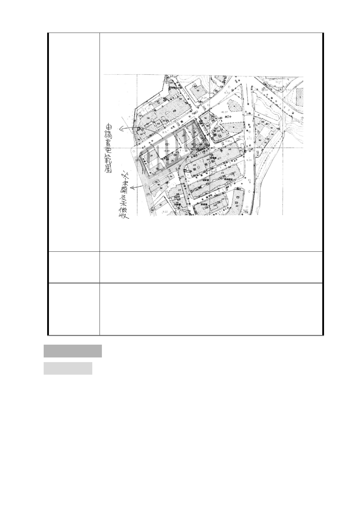

發變更之。
國有財產署所送申請變更之範圍其臨街地及公設道路皆為
建 議 辦 法 私有及未開闢道路(詳如附件)建請貴府一併納入開發變更
之。
本案洽悉。更新地區劃定範圍應充分考量及兼顧地區發展趨
委
決
員
會
議
勢及未來所扮演之功能定位。本案劃定更新地區不符此一期
待，同意退請市府併本市更新地區劃定標準作業程序進行檢
討，並請都市發展局於2至3個月內完成本市更新地區劃定之
標準作業程序，以利後續審議。
貳、審議事項
審議事項一
案名：「變更臺北市信義區福德段二小段319地號等26筆土地（廣慈
博愛院及福德平宅）社會福利設施用地、公園用地、商業區
及道路用地為特定專用區主要計畫案」及「擬定臺北市信義
區福德段二小段319地號等26筆土地公共服務特定專用區細
部計畫案」
-3-